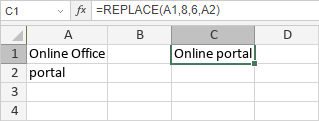

REPLACE/REPLACEB funkcija
REPLACE/REPLACEB funkcija je jedna od funkcija za tekst i podatke. Koristi se za zamenu skupa karaktera na osnovu broja karaktera i početne pozicije koje odredite, novim skupom karaktera. REPLACE funkcija je namenjena jezicima koji koriste jednobajtni karakter set (SBCS), dok je REPLACEB za jezike koji koriste dvobajtni karakter set (DBCS) kao što su japanski, kineski, korejski itd.
Sintaksa
REPLACE(old_text, start_num, num_chars, new_text)
REPLACE funkcija ima sledeće argumente:
| Argument | Opis |
|---|---|
| old_text | Originalni tekst koji se menja. |
| start_num | Početak skupa koji će biti zamenjen. |
| num_chars | Broj karaktera koji će biti zamenjen. |
| new_text | Novi tekst. |
REPLACEB(old_text, start_num, num_bytes, new_text)
REPLACEB funkcija ima sledeće argumente:
| Argument | Opis |
|---|---|
| old_text | Originalni tekst koji se menja. |
| start_num | Početak skupa koji će biti zamenjen. |
| num_bytes | Broj karaktera koji će biti zamenjen, baziran na bajtovima. |
| new_text | Novi tekst. |
Napomene
REPLACE funkcija je osetljiva na velika i mala slova.
Kako primeniti REPLACE/REPLACEB funkciju.
Primeri
Slika ispod prikazuje rezultat koji vraća REPLACE funkcija.
